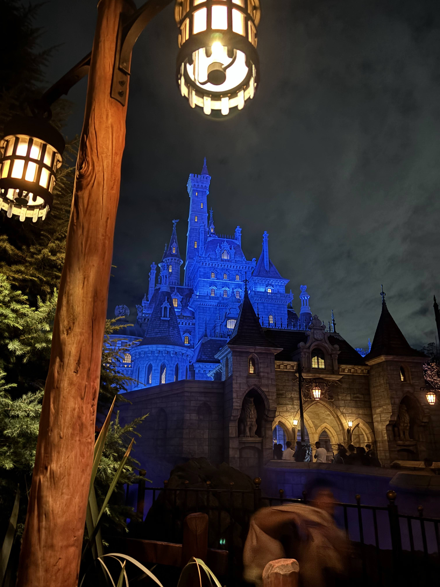
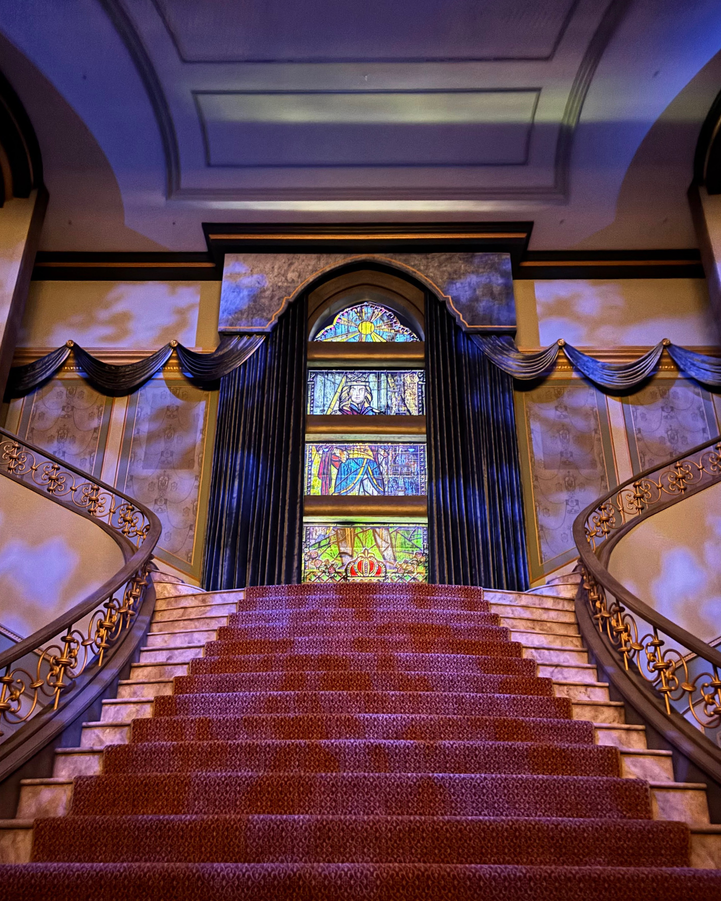
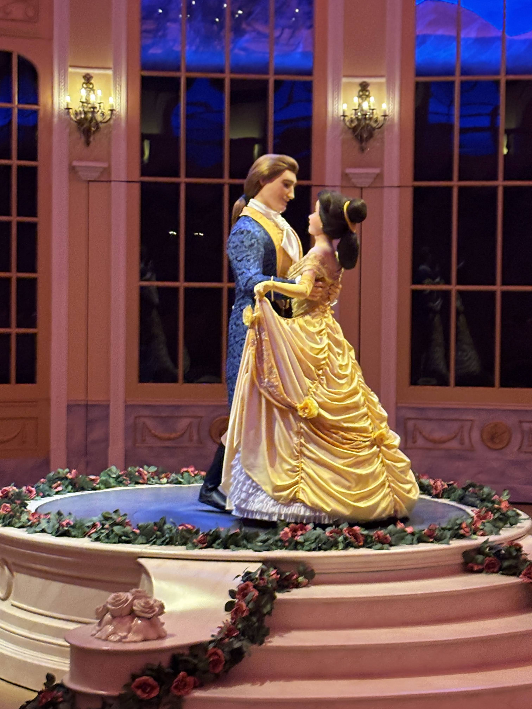

Beauty and the Beast

I. 呪われた城への空間演出
2020年、ファンタジーランドに誕生した『美女と野獣』のエリア。ここは単に映画のセットを美しく再現しただけではなく、エリアに足を踏み入れた瞬間から映画のストーリー順に景色や空気感が変化していく、計算され尽くした**「歩く映画体験」**の仕掛けが施されています。
エントランスに佇むベルの父の家「モーリスのコテージ」を抜けると、のどかで活気ある「村の広場」へと出ます。ここでは映画の「朝の風景」が聞こえてきそうな、陽気なフランスの片田舎が広がっていますが、村を抜けて野獣の城へと進むにつれ、景色は一変して薄暗い「深い森」へと変わります。映画でモーリスが狼に襲われ迷い込んだ、あのひんやりとした不気味な森が、緻密な植栽と岩組によって見事に演出されているのです。城の前に架かる頑丈な石橋を渡ることで、ゲストは「人間の世界（日常）」から「魔法の世界（非日常）」へと完全に引き離されます。

II. 魔法のものがたり：Qラインと城内の秘密
そびえ立つ約30mの城内に入ると、ゲストはただ並ぶだけでなく、この「城に遺された記憶」を追体験していくことになります。
最初に足を踏み入れる大広間の応接室には、意思を持った「暖炉」があります。よく見ると、呪いで家具に変えられてしまったルミエールやコグスワースの気配が、暖炉の彫刻装飾のなかに隠されています。さらにその先、ベルと野獣が少しずつ心を通わせていく名シーンの舞台となった「朝食ルーム」や「大階段」へと進みます。

そしてアトラクション本編の、世界初の「トラックレス（レールのない）ライド」を採用した魔法のカップ。なぜこのカップがこれほど滑らかに、まるで生きているように踊るように動くのか。それに対するBGS的な理由は、**「城全体にかけられた『すべての調度品が命を持つ』という魔女の呪いに、ゲストも完全に巻き込まれているから」**という完璧なものです。ゲストは単なる観客ではなく、食器たちの宴に招かれた「主賓」として、彼らと共に踊る体験をするのです。
III. プロップスに隠された内面
エリア内のショップやレストランには、キャラクターたちの生活感と個性が限界まで詰め込まれています。
「ラ・タベルヌ・ド・ガストン（ガストンの酒場）」は、映画に登場する、彼を称えるためだけに作られた狂気の酒場です。店内中央には彼の巨大な肖像画が飾られ、壁には彼が仕留めた動物の剥製（トロフィー）が埋め尽くされています。ガストン専用の「鹿の角で作られた巨大な椅子」も置かれ、彼の凄まじい自己顕示欲が表現されています。これはどこか、タワテラのハリソン・ハイタワー三世の収集欲にも通じる「傲慢さ」の象徴です。
一方、村の店「ビレッジショップス」は、ベルが普段利用している本屋や商人たちの店です。「ラ・ベル・リブレリー（本屋）」には、ベルが高いところにある本を取るために使った「はしご」や、彼女が何度も読み返した愛読書がディスプレイされ、村人から「風変わりな娘」と呼ばれていた彼女の、優しく知的な生活感がそのまま残されています。
IV. 音楽と技術の融合（没入感）
タワー・オブ・テラーでも見られた「音楽による空間の支配」は、このエリアでも極限まで磨き上げられています。エリア内のBGMは、のどかな村ではアコーディオンやアコースティックな温かい楽器の演奏（朝の風景など）ですが、城の森へ進むにつれて、重厚なストリングスとパイプオルガンの不気味で切ない旋律へと、シームレスに変化します。

また、ウォルト・ディズニー・イマジニアリング（WDI）の最高峰の技術「オーディオ・アニマトロニクス」により、ベルや野獣、お城の仲間たちが「本当にそこで息をして生きている」かのような、映画からそのまま飛び出してきたかのような極限の動きを実現。1991年のあのアニメーション映画の中に自分自身が完全に迷い込んでしまったかのような、究極の没入感を生み出しているのです。
V. S.E.A.の影と「傲慢」という名の罰
ここからは、サイト内の他の記事と繋がるディープな裏設定の考察コラムです。
美女と野獣の時代設定は18世紀中頃のフランス。この時代、地上では「S.E.A.」の探検家たちが科学や発明で世界を変えようと躍進していました。しかし、野獣の城は「魔女の呪い」という非科学的なオカルトの力によって、時代の進歩から完全に隔離され、時間が止められていたのです。
💡 ガストンとハイタワー三世の「共通テーマ」
ガストンの酒場に飾られた「略奪された剥製たち」は、ハイタワー三世の略奪美術コレクションのミニチュア版のようでもあります。ディズニーが描く「ガストン（野獣）」と「ハイタワー三世」には、**『人間の強欲と傲慢さ』、そしてそれに下される『突然の失踪・呪いという罰』**という、完全に共通した文学的テーマが隠されています。野獣の城は愛によって呪いが解かれましたが、ハイタワーのホテルは今も呪われたまま。この対比こそが、パークの歴史をさらに深く、面白くしています。